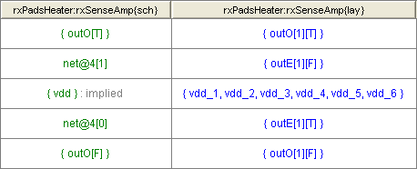

The Exports node is always a leaf node with the name "Exports [X]", where X is the number of Export mismatches in this comparison (Figure 1). Selecting an Exports node displays a table on the right side of the NCC graphical window (Figure 2). The table has two columns – one per compared Cell. The header contains Cell names. Each row corresponds to a mismatch. A table cell has zero or more Export lists. An Export list is a list of all the Exports found on a Network and is displayed as a list of Export names surrounded by curly brackets { }. Each Export list is a single hyperlink which highlights all the Exports in the list.
Multiple Export lists in a table cell occur when a single Network in one design (e.g. The schematic) has one or more Exports that match multiple Exports attached to more than one Network in the other design (e.g. the layout). For example, the mismatch on the third row from the top in Figure 2 has layout Exports (the second column) attached to a single Network matching schematic Exports (the first column) attached to two Networks.
Figure 2: The Exports table
An empty table cell means one design has Exports that match no Exports with the same names in the other design. For example, the mismatch in the top row in Figure 2 has the layout Export E_core_sclk matching no Exports in the schematic.
Some Exports are implied. For example, if a schematic Cell uses a global ground, but does not contain an Export for that ground, then NCC will automatically insert an implied Export for ground. This is done because most often the corresponding layout Cell has a ground Export, and we want the schematic and layout Cells to match. Implied Exports are not hyperlinked and have " : implied" added to their names (Figure 3).
When NCC does not find any topological mismatches, it attempts to suggest possible matches for Exports that failed to match by name. Such suggestions are printed in green. The first row of the table in Figure 3 indicates that the outO[1][T] Export in the layout topologically matches the outO[T] Export in the schematic, even though they have different names. The second row indicates that the outE[1][F] Export in the layout topologically matches the net@4[1] Wire in the schematic, even though the net@4[1] Wire has no Exports. Note that a Wire name is not an Export list and is not surrounded by curly brackets.

Figure 3: Implied exports are marked by "implied". Suggestions are printed in green.
Exports that match by name, but are not on equivalent Networks, have red hyperlinks. Such Exports might have suggested matches as well, which are printed in green. In the first row of the table in Figure 4, the jtag[1] Export in the schematic does not topologically match the jtag[1] Export in the layout, but does match the jtag[8] Export in the layout.

Figure 4: Exports that match by name, but are not on equivalent networks have red hyperlinks